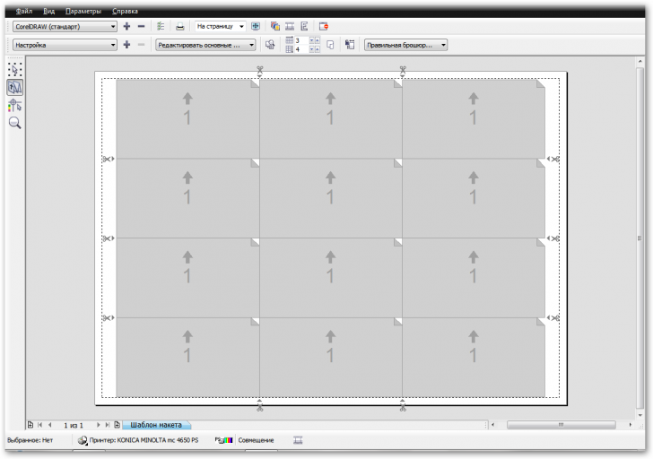

Помогите,пожалуйста доделать визитку
112Alenka / 16.12.2010, 00:30/00:41
Форум:
у меня - Draw Graphics Suite X3, я составила визитку строительной фирмы и дошла до печати,но у меня возникает проблема :в методичке по компьютерной графике написано:"на вкладці Графіка задаємо дозвіл 600 dpi".вы бы не могли одьяснить,что это за вкладка, где она находится и как правильно её нужно применять, чтобы разместить на А4 10 визиток для печати. Большое спасибо жду ответа.
Чтобы разместить 10 визиток достаточно использовать 1 страницу под 1 визитку (90х50 мм), в некоторых случаях для типографии 92х52 (если картинка выходит по обрезку). Далее вызвать меню принт, перейти в принт-привью (предпросмотр), а там можно задать раскладку этой визитки на А4, использую иконку слева под стрелкой с точками. Появится эскизное представление странички с номером 1 в центре. Теперь задаешь кол-во повторов вместо 1х1 (по умолчанию) - как 2х5. Видим 10 раскладок. Кстати тут же можно изменить расстояние между визитками и поставвить метки реза и другие вспомогательные элементы.
Добавлено (16.12.2010, 11:18)
---------------------------------------------
Что касается качества растровой графики, то здесь простое правило чем больше мелких деталей на изображении НЕОБХОДИМО передать качественно, тем важнее разрешение 600 dpi как максимальное, необходимо использовать. Иначе 300 dpi хватит. А для векторной графики это понятие не подходит. Кстати текст рекомендую при печати переводить в кривые (как объект).
Добавлено (16.12.2010, 12:39)
---------------------------------------------
есть ещё скрипт Oberon Object Tiler
Для печати на принтерах достаточно разрешения 300 для растровых объектов, и оно задается при верстке макета в свойствах объекта. А насчет раскладки визиток на А4 можно применить такую схему
